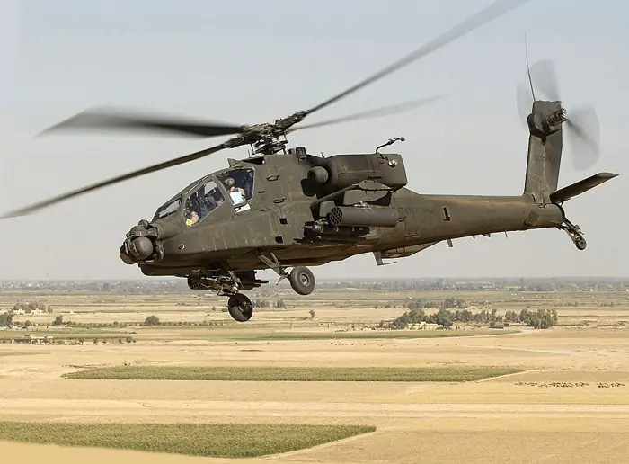

One person dies in fiery helicopter crash in Los Angeles

What happened
PBS reported: “Driver arrested in a bus collision that happened before a deadly news helicopter crash in LA” [3].
NBC News framed the same development as: “3 dead after news helicopter crashes while covering deadly Los Angeles bus collision” [2].
6 distinct outlets were tracked covering this story today.
How outlets are reporting it
abcnews.com: “3 dead including reporter, pilot in news helicopter crash in LA” [1]
NBC News: “3 dead after news helicopter crashes while covering deadly Los Angeles bus collision” [2]
PBS: “Driver arrested in a bus collision that happened before a deadly news helicopter crash in LA” [3]
The Washington Post: “3 dead after L.A. news helicopter goes down while covering crash” [4]
ktla.com: “New details emerge in fatal Metro bus collision that preceded news chopper crash” [5]
KCRA: “At least 3 dead after NBC LA helicopter crashes in Los Angeles” [6]
Background and context
This brief aggregates 6 independent publishers covering the same event; each headline in the section above reflects that outlet’s own framing. Full original reporting is linked in the sources panel below.
Why it matters and what to watch
Sustained coverage across 6 outlets signals this story is developing and likely to move.
For the latest figures, official statements and corrections, follow the linked originals.
Sources & further reading
- abcnews.com 3 dead including reporter, pilot in news helicopter crash in LA
- NBC News 3 dead after news helicopter crashes while covering deadly Los Angeles bus collision
- PBS Driver arrested in a bus collision that happened before a deadly news helicopter crash in LA
- The Washington Post 3 dead after L.A. news helicopter goes down while covering crash
- ktla.com New details emerge in fatal Metro bus collision that preceded news chopper crash
- KCRA At least 3 dead after NBC LA helicopter crashes in Los Angeles
This report aggregates 6 independent outlets; each item links to the original.